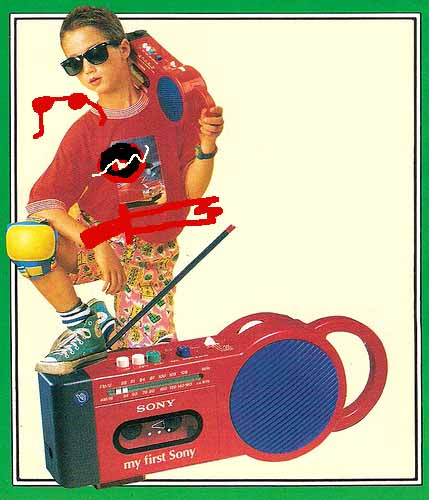
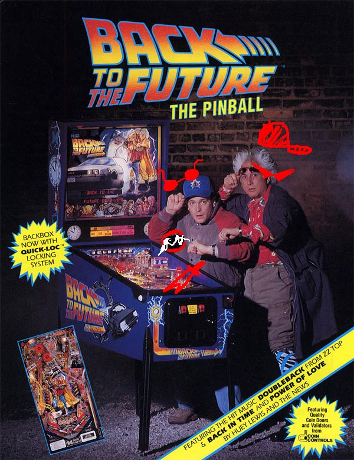

[S] Descend more like [S] Everybody is Doomed.
wHAT A BEAUTIFUL OPENING FOR ONE THOUSANDS PAGES BEFORE I’M ALLOWED TO GET EVEN AS MUCH AS A GLIMPSE OF ACT 5!!!
At this point I don’t even know what I’m trying to accomplish by getting there. It’s just… there are six acts and I’m reading Act 5!!! I know Act 5 is super long and Act 6 even longer, because you guys had no qualms about telling me this every time I got excited about reaching a new act BUT STILL. It’s still better than be reading Act 4. I’m so done with this Act. IT’S BEEN MONTHS. Well, whatever, I will try to move faster.
Those are Dave’s hands. I believe he had just threw himself out of the window and into lava. Yup. Look at this bunch of highly logical sentences this webcomic makes me write.
WHY IS HE STANDING ON THE WC. Oh, yeah. Couldn’t really reach the window otherwise. Thirteen years old in 2009 were apparently all tremendously short. Wow, it seems like Dave really freaked out after all! Which means!!! That we found Mr Strider’s weakness!! Blood!! ….Or death. Or both. Or just having to handle your own lifeless body and have to dispose of it. Pretty sure that would freak out anybody. Okay, we have found nothing.
I really hope Jade is not watching him at the moment. She would be all “ dave what are you doing dave dave are you sleeping dave reply to me” and then she would throw a smuppet to his face. Which really wouldn’t help. Then she would notice the blood and flip the fuck out WAIT SHE IS SLEEPING. “ dave you’re such a mess you got apple juice all over yourself!! :( let me help” *proceeds to wipe the blood away with smuppet’s ass as dave flails*
I HAVE BEEN WAITING FOR THIS
<!doctype html>GC: D4V3 WH4TS 1T SM3LL L1K3
TG: what
GC: YOUR BLOOD
TG: fuck off
Truly. I can feel it. This is the beginning of a beautiful friendship. Last time I said it I was talking about Jade and CG. Aren’t they best buddies now?? See, I do not disappoint. *swiftly and completely seriously adds “gc is really just a vampire” to theory list* ….What? The teeth are there.
GC: GOD
GC: TOO M4NY D4V3S
GC: 1TS L1K3 TH1S B1G 4SSHOL3 4ND COOL GUY P4RTY
GC: BUT SOM3ON3 FORGOT TO 1NV1T3 4LL TH3 COOL GUYS
GC: >;]
OOOOOOOOOHHHH!!!! BUUUUUURN!!! And the award for the sickest burn in the whole webcomic so far goes to GC! Wha— What. What is this sound. Yeah, in the distance. Can you hear it?? Whoops. Just an ambulance coming to take Dave away in order to threat his third degree burns. Dave 0-1 GC
TG: man im telling you burns like that are unreal
TG: where do you even get a burn thats that sick
GC: I B3T YOU C4NT W41T TO B3 4 US3L3SS P13C3 OF SH1T 4LL D4Y 4ND F4LL DOWN 4LL TH3S3 BURNS
TG: no you messed that up
Is this a SBAHJ reference. That I don’t get. While the alien over there does. This is ridiculous. I DID NOT sit through over 40 comics of that abomination only to end up NOT GETTING references to it!! That shit damaged my subconscious permanently!!! This is unacceptable. I want a refund!!
GC: D4V3 D4V3
GC: 1S TH1S YOU
GC: http://tinyurl.com/PUR3D4V3
TG: uh
And Dave is, for the first time in his life, speechless. PURE DAVE. Like what? His true essence or something?? Made of SBAHJ, puppets and irony. Or maybe it is a purebred horse with Dave’s face photoshopped on it. You never know.

Only ‘90 kids will remem— Wait, actually, I’m a 90 kid and I have never seen that thing before. Also… umh, GC… I don’t know how to say this but you got the only cool kid picture in which the kid is already wearing shades… So. Umh. Maybe erase them?? Nobody wears glasses on another pair of glasses. Unless you’re John. Or me in the sun when I forget my prescription sunglasses home, which is sadly very often.
GC: PFF4H4H4H4H4H4H4H4H4H4H4H
GC: H4H4H4H4H4H4H3H3H3H3H3H3H3H3H3H3H3H3H3H3H3
TG: did you try to draw shades on his face and miss
TG: whats even the point hes already wearing shades
SHE IS BLIND, IDIOT. How did you manage to forget?? You mentioned it ten words ago??? Are you serious??? I think that image shocked Dave more than he lets on. It gave him selective amnesia or something.
GC: H4H4H4H4H4H4H4H4H4H4
GC: 1TS SO P3RF3CT TH4T 1S SO YOU
GC: H3H3H3H3H3H3H3H3H3H3H3H3H3H3H3H
TG: this is moronic
…………..It’s not that funny, GC…….. Are you okay???
GC: OR 1LL M4K3 4NOTH3R ON3
GC: 4ND 1 KNOW TH3S3 HURT YOUR F33L1NGS
GC: >:D
GC, he literally, practically, technically, all of the callys, does not give a shit. Why would something like that hurt his feelings?? The only way they could would be, and it is very very stretched, if he like… was offended that… you think his only defining traits are the shades and the piece of shit sword??? And that those are the only things one needs to be him?? Maybe??? If you want to really really stretch it. No, but seriously he does not give a fuck. Change trolling strategy.
TG: i dont know what it smells like or tastes like
TG: but i sure as hell know what it looks like
TG: like a fuckin symphony on my retinas
TG: shit is beautiful like a little vermilion picnic on my hands
And there he goes. We lost him. He is in Interminable And Nonsensical Metaphors Land. Honestly, screw Heat and Clockwork, this should have been the name of his land. We lost him, GC. Are you happy? You hopped on the train, there is no stopping it, no way to get off, ultimate destination Bullshit Town.
TG: every day i open my eyes i find poetry in even the simplest things
TG: just one of those little joys in life you take for granted you know
TG: this miraculous gift of vision
ARE YOU MAKING FUN OR HER FUCKING HANDICAP?????!?!?!? ARE YOU SERIOUS???? Dave, that’s so fucking low, seriously… Is that the best you have got?? Well, I’ve got news for you, GC does not give a shit about what you are saying! She is so chill, so effing chill you wouldn’t believe it, she is chiller than a trip on Mt. Everest, chiller than a brain freeze after eating ice cream, CHILLER THAN ANYTHING.
GC: D4V3 D4V3
GC: CH3CK 1T OUT
GC: 1 F1GUR3D 1T OUT
GC: TH1S H4S GOT TO B3 YOU!
GC: http://tinyurl.com/TH1S1SSOOOOD4V3
GC: 444444444H4H4HH4H4H4H44H444H4HH4H4H4H4H4
GC: H3H3H3H3H3H3H3H33H3H3H3H34H4H4H4H4H4H4H4H4H4H4H4H4H4
She might be chill, but she is also completely out of control right now. The one we lost is, in fact, not Dave but GC! She is long gone.
- She found CG’s chill pills, which he uses when feeling too angry to think straight, mistook them for M&Ms and gulped down a great quantity. Now she is experiencing some sort of sensory overload and does nothing than laugh. GC, lay down, get some rest, drink lots of water and get ready to shine bright again… TOMORROW! Seriously, go lay down, I’m getting worried.
- She was exploring the Human Net when she stumbled upon 4chan. Upon reading for an hour she got completely under shock due to the awfulness of it all, and retired to her Comfort Zone of shitty drawings hoping it would help. That laugh is forced. She is terrified.
- Turns out that troll romance is weirder than we imagined and laughing in the other’s face obnoxiously is just a form of courtship. GC did mention the fact that she laughs at CG constantly. Plus she was totally flirting with Davesprite before. SEE, EVERYTHING FITS. The irony lays in the fact that Dave has been assuming that literally everybody has been flirting with him since forever, and for the first time somebody REALLY is flirting and he doesn’t even notice.
TG: i could try but it would wind up like a motorcycle stunt gone horribly wrong
TG: my broken body would flop and tumble around like a rag doll
GC: H4H4H4H4H4H4HH4H4H4H4H4H4H4H44H4H4H4H4H
GC: OH GOD 1 C4NT BR34TH3!!!!
TG: and yet as much as that guys the tooliest dude i could ever hope to meet he and i would still get along famously
TG: cause we can both see
GC: H3H3H3H3H3H3H3H333H3H3H3H3H
GC: H4H4H44H4H4H
TG: havin a see party
TG: like a couple of eagle eyed bros peepin shit up into the wee hours
GC: D4V3
GC: C4N 1 COM3 TO YOUR S33 P4RTY?
TG: i guess but youll have to be careful not to stumble around bumping into all the gorgeous masterpieces hanging around everywhere
TG: god so beautiful to look at with my perfect eyesight
GC: C4N 1 L1CK TH3 P41NT1NGS?
TG: yeah thats fine
YOOOOOOOOOOOOOOO, JADE IS GETTING TO INTERACT WITH A NICE TROLL, FUCKING FINALLY. Unless he starts rapping and claim he wants to destroy anyone else…. Umh. That is also a possibility.

JADE IS STILL FUCKING ASLEEP OH WAIT RIGHT. John is waking up soon. I literally just said it three paragraphs above. Maybe I’m the one with amnesia.
HOLD THE FUCK UP………..Is that. A conversation. That happens RIGHT BEFORE SHE ENTERS????? Did we jump ahead in time AGAIN???? And oh godness she is still fucking sleeping she will sleep through the fucking entry I can feel it. While John is in a panic and throws her entry item at her in the hope she will wake up in time to eat/break/hatch it.
– adiosToreador [AT] began trolling gardenGnostic [GG] –
AT: jADE, hI, iS YOUR ROBOT NEARBY,
GG: ummmmmm…..
AT: wHERE YOU CAN TYPE, bECAUSE YOU ARE ASLEEP,
GG: oh! yes it appears so!!!
AT: oK, uHH, iN THAT CASE, aRE YOU HAVING A PLEASANT NAP,
NOW THIS IS THE CONTENT I WANT TO SEE. Just people being super nice to Jade forever. And ever. Because she is amazing. And she deserves it. And CG never contacts her ever again. And nobody is an asshole to this cinnamon roll anymore. ……I think you noticed that I have a weak spot for Jade…. Maybe….
GG: i guess! ive been pretty busy here
GG: ive had to stay asleep for a long time because john is supposed to wake up soon
GG: but he just wont wake up!!!!!
GG: im pretty sure im supposed to be the one to wake him but i dont know what to do :(
That lazy ass. Well, remember that if you need anything me and my fists are over here and ready to punch a teenager in the face. But if you want to do it on your own, I have a proposition. Why don’t you just throw him through the window of his tower. He might wake up mid-falling… or die after getting severe head concussion when hitting the ground!! In any case he is not sleeping anymore so it’s a win-win situation!!! :D
………….I’m still angry at John for a number of reasons and it shows.
It’s just…. that he is always fucking around and waiting for things to happen?? To fall at his feet?? He is not advancing in the game on his own! He is doing nothing! Just waiting there for what destiny will throw at him! It irks me!! He doesn’t even understand what he is doing! Seriously, John could do great things if he only stopped and started using his brain! He is smart, he only has to apply! Is this how teachers at school reunions feel like. He doesn’t have an objective set like the others. The others don’t need to be prompted to get shit done. Will he just randomly stumble his way through the game forever?!? You know why this happens?? Nanna is gone, Rose is gone, GC is gone. What do I mean by this?? There are no more ladies with a strong personality bossing him over. He probably feels hella lost right now. Think about it. Anything important that John has ever accomplished was heavily prompted by one charismatic, assertive lady. This is really a problem that we need to overcome! A more pressing matter than I imagined. >:[
AT: uHHHHH,
GG: huh??
AT: oHH, sORRY,
AT: i WAS LOOKING TO SEE IF i COULD SEE HIM BE AWAKE IN THE FUTURE,
AT: bUT i CANT SEE IN HIS DREAMS, oR ANYTHING,
GG: oh……
GG: well thanks for trying anyway!
Now, this is a thing that I have to keep in mind. Trolls cannot observe the kids'dreamselves actions, huh? Welp, I guess you could still check if the real John is going to take a nap anytime soon but that wouldn’t mean anything in regard to his prospit self.
AT: bUT YOU WILL WAKE UP SOON, iT LOOKS LIKE,
AT: sO MAYBE THIS MEANS YOU HAVE SUCCESS,
GG: i hope so!
Mmmh. Jade, I wouldn’t really be hopeful. You would wake up soon after you met John for the first time?? And leave him alone on Prospit?? After you have been waiting for this moment for effing years?? WHY?? Yeah, I don’t think John is gonna wake up. At least not as soon as you think.
GG: what am i doing when i wake up?
AT: oH, gOODNESS, tHERE IS SO MUCH GOING ON, aND THERE IS A LOT OF TROUBLE THAT YOU ARE IN,
GG: oh no!!!!!
WHAT. Why trouble????? Is she going to wake up directly in mid-entry or something?? That sounded like it would happen acts away before and now it is literally behind the fucking corner?? It makes no sense whatsoever. Plus, John is still in The Veil. How would he get her in?? I’m really not getting this??
AT: bUT, wHAT IT COMES DOWN TO IS, iS THAT YOU DON’T HAVE MUCH TIME ANYWAY,
AT: tHIS IS YOUR LAST DAY,
AT: bEFORE YOU MAKE THE RIFT,
How incredibly not fucking ominous at all, YAY!!
By the way, what is this new trend between the trolls of dropping around the word rift without stopping to explain what the hell they mean by it. Am I supposed to just shrug it off and move on. I don’t think we are talking about a literal breach into the ground, especially since this rift is made by the kids themselves. Unless someone gets the power to summon effing earthquakes, this is not the case.
AT: aND THEN i CAN’T SEE WHAT HAPPENS AFTER THAT, aNYMORE,
AT: wHICH IS OK, wITH ME, bECAUSE, tO BE HONEST,
AT: sEEING YOUR WHOLE BIG CONFUSING FUTURE AND PAST IS, kIND OF OVERWHELMING,
GG: yes i know what you mean….
No, you don’t. You’re not the one who has been trying to figure out the mess you leave behind for thousands of pages. So, right. The rift interrupts the communications between the two sessions. Something that regards the game dimension as a whole?? It could be some kind of breach in spacetime continuum instead?? It’s not like we haven’t seen anything similar. Mr/Miss Mystery Arm Owner has been fucking up with the spacetime continuum since page twelve of this webcomic. Something of that caliber would definitely interrupt connections. Plus, it’s something that the kids can make. We got a Space and a Time player, what else do you need??
AT: iTS SO COMPLICATED, aND, i DON’T EVEN KNOW WHAT i SHOULD BE ACCOMPLISHING,
AT: i THINK,
AT: uSING THESE GADGETS AND THINGS, aND MY TIME LINE ADVANTAGES, tO PLAY PRANKS ON YOU,
GG: that sounds like it would be fun!
GG: but you guys never even played pranks on me, you were always just kinda mean D:
AT: sORRY, }:(
AT: i THINK,
AT: tHE IDIOTIC THING ABOUT TROLLIAN IS,
AT: iF YOU USE IT TO TROLL PEOPLE, i THINK YOU ARE JUST AS LIKELY TO GET TROLLED YOURSELF,
AT: mAYBE EVEN MORE BADLY,
AT: wHICH i THINK IS WHAT IS GOING ON HERE, jUST BETWEEN YOU AND ME,
I think AT is still upset about the suggestive and plain out homosexual mess in which he ended up when Dave decided he was fed up and trolled him back properly. The poor guy is scarred for life now.
GG: well i know i havent trolled you guys!
GG: or not yet………
GG: heheheh
I KNOW, JADE. I KNOW. It is such a fucking shame too. You should definitely try it out with CG someone. Maybe with CG a troll that is easy to fool. CG Anybody like that will do just fine.
There is an hidden message up here. An intricate puzzle very difficult to solve. …..Okay, alright LISTEN UP. I just want… Jade to be just a little mean to CG. He was an outright asshole to her and hasn’t even properly apologized! I doubt he will ever do it at this point! So why not troll him a little to give him a taste of his own med— well, actually, he never was worth a cent in the trolling department. I just want Jade to make CG regret how mean he was. Just make him go “ WOW I SURE WISH I DIDN’T INSULT JADE BACK THEN SHE IS A WAY BETTER PERSON THAN ME AND ALSO A REALLY NICE AND SMART AND AWESOME GIRL—………… Okay, so maybe I inserted a bit of my own opinions in there. :(
AT: nO,
AT: bUT YOU SORT OF ARE,
AT: mY FRIEND IS GOING CRAZY, hE WANTS TO TALK TO YOU,
AT: hE LEFT YOU A MESSAGE, a LONG TIME AGO ON YOUR TIME LINE,
AT: tO TALK TO HIM, wHEN YOUR ROBOT BLOWS UP,
GG: oh yeah!
GG: i totally forgot about that
GG: does it really blow up or was that another trick?
Jade, yes. Why are you so set on not believing them?? Your robot will blow up, together with your… Jade, I don’t know how to say this delicately… but… YOU’RE GONNA DIE. Oh, wow, fuck, that wasn’t very delicate now, was it?? Shit. Well, I’m like 90% sure it will happen as of now.
AT: uHHHH,
AT: i DON’T KNOW, i CAN’T SEE IT BLOW UP IN YOUR FUTURE,
AT: nOT ON SCREEN,
AT: i MEAN,
AT: tHERE ARE LOTS OF EXPLOSIONS, aLL THE TIME, aNYWAY,
AT: tOO MANY EXPLOSIONS,
WHAT THE FUCK IS GOING TO HAPPEN ON JADE’S ISLAND
BEC, PROTECT HER
GG: hmmmmm
GG: you could ask me in the future!
AT: oK, i WILL ASK,
AT: oK,
AT: yOU SAID, yES, iT DID BLOW UP, aND YOU TALKED TO HIM,
AT: aND, uHHH,
AT: tHEN YOU SAID HE WAS ACTUALLY A PRETTY NICE GUY, wHICH i THOUGHT WAS WEIRD,
GG: is he not a nice guy?
……
………………..
………………………….
…………………………………….no???
Jade, are you hearing yourself???? OHHH OH WAIT. SHE IS SLEEPING. I don’t think she has realized who AT is talking about. She is confused! >:)
……Actually. Umh. Her future self said he was nice first. Not just that. The phrasing here is important. "actually a pretty nice guy”. That means…. Oh, godness. That means she… has changed her mind about him. That she thinks she was mistaken in the beginning. THAT HE WAS ACTUALLY NICE ALL ALONG.
But Jade. JADE. My rage against him only burns for your sake, because he insulted you but you didn’t know how to defend yourself properly, because you didn’t seem offended enough and I had to be enraged for the both of us. If you forgive him, what is its purpose. Now I just seem extremely silly in retrospect.
AT: nOT, rEALLY,
GG: hmmm….
GG: well maybe hes just been through some tough times
GG: maybe we should give him the benefit of the doubt?
………………….We should?? Hasn’t AT been through exactly the same things?? He is not an asshole though, is he now??? Ugh. Okay, benefit of the doubt. I won’t be that harsh on him. ONLY BECAUSE IT’S YOU ASKING.
AT: uHHHH,
GG: for whatever its worth i think youre a pretty nice guy too!
AT: oKAY, tHANK YOU,
It’s because he really actually is, you know. What does CG even do to redeem himself in Jade’s eyes tho?? AT contacted her in the future. Some time after her robot blew up. After that happened she was supposed to contact CG. And she did. Did he… did he like… comfort her or something?? Turns out that CG is just as chivalrous as a Cancer is supposed to be?? I really cannot imagine CG comforting anyone. I feel way more comfortable imagining CG being all “I TOLD YOU SO” after her robot blew up. Meh. I’m biased.
GG: also you seem to be the only one who ever thinks to talk to me while im asleep!
GG: why is that?
AT: oH, i GUESS,
AT: tHAT IT MAKES SENSE,
AT: bECAUSE YOU HAVE A ROBOT, tO LET YOU SAY THINGS THAT HAPPEN, oN PROSPIT,
AT: aND i’M CURIOUS,
AT: bECAUSE THE ONLY TIME i EVER HAD FUN PLAYING THIS GAME WAS WHEN i WAS ASLEEP,
AT: bUT NOW ALL OUR DREAM SELVES ARE DEAD,
AT: }:’(
ALL OF THEM???? What the heck did you even do to end up all dead?? WAIT. There is something that is even more upsetting. He only ever had fun while asleep?? That’s… very sad. Why though. Well, he probably is a pacifist so he did not enjoy fighting?? Or the bloodshed on Skaia during the last fight. Poor kid. :(
GG: oh no!!!
GG: dream selves can die?
Yes, you will I MEAN THEY CAN YES THEY CAN DAMN…… Hahaha, I was not in any way implying you had to fear anything extremely awful or otherwise happening to your dreamself, Jade! Hahaha! Look, I’m laughing! Could I be laughing if I was hiding anything that horrible from you?? Of course not!!
GG: i never knew that
GG: or even thought about it….
GG: i guess it makes sense though
JADE ARE YOU SERIOUS. There is a fucking shrine that your Grandpa made for you, there is a photo of your dreamself in cute golden pajamas, on top of a fireplace, surrounded by fucking candles. WHAT DID YOU THINK IT WAS??? Your dreamself’s birthday?? Let’s celebrate and bring presents?? Do you want a new Squiddle doll, or would you rather get another bass?? Seriously, we are all ears.
AT: sO ENJOY YOUR NAP,
AT: wHILE IT LASTS,
AT: bYE,
How incredibly not fucking ominous at all X2 COMBO, YAY!!


AWWW. WHAT A CUTIE. I’m sorry you had to die, AT! :(
Why are his eyes always pointing upward though. Are they stuck like that or what. Can he even look around. My grandma always says that when you sin an angel sneezes in your face and you eyes get stuck forever!! This is for all the thinking you did about Dave, AT. What with all that NSFW rap. You had it coming.
………..Was it angels sneezing tho. ……Maybe I messed that one up. It definitely involved angels and eyes though. And there wasn’t anything malicious about “sinning” really. She said it often when I was really little and I said something blasphemous. And it worked, I was fucking scared.

GA: Are We Friends Yet At This Point In Time
WHAAAAAT. You are giving up already?? I thought you were a fighter, GA!! C'mon. Are you telling me I got you wrong all along?? You can’t give up now! And in fact I can garantee you that you won’t! I saw your seventh conversation and you were more set on it than ever!!
TT: Pardon?
GA: Furthermore Which Rose Have You Chosen To Be This Time
GA: The Stupid Rose Or The Smart Rose
TT: I’m a little busy.
GA: It Sounds Like You Are Attempting To Be The Smart Rose This Time
GA: Please Take Note Of The Subtle Scorn Underlying The Selection Of The Word Attempting
GA: Smart Rose Should Get A Kick Out Of That
GA: Smart Rose Is All About Subtle Scorn Isnt She
GA, you think you got Rose all figured out but YOU HAVEN’T!! I am saying this because I thought so too!! And then it blew up in my face!! And I don’t want you to go through it too but you eventually will have to. I’m just waiting for their Eight Conversation, honestly. If GA is smart she will understand that it is better not to contact Rose in the past and then we will have an 8=8 conversation. Eight for Rose and eight for GA. And they will be even. And THAT will be interesting. No ploy to own each other. Just a conversation between two girls. And GA lamenting the fact that she got toooooooootally owned in her first conversation.
TT: That sounds about right.
GA: Whereas Dumb Rose Doesn’t Capitalize Letters Even When Discussing The Proper Names Of Human Monsters In Earth Cinema
GA: I Think You Should Establish A Greater Commitment To A Single Roleplaying Scenario
TT: Honestly, I was looking forward to playing along and reading your Dumb Rose script for our next conversation.
TT: But it turned out there was a perfectly logical explanation for it all.
TT: Imagine my disappointment.
TT: While I imagine yours, once you finally catch on.
Daaaaaaaang. Yeah. GA won’t be happy about this. She was so adorably pumped that she managed to outsmart Rose ( I was so damn pumped too, dammit) and she will find out she accomplished nothing. :(
GA: I Suddenly Dont Understand Anything
GA: What Are You Talking About
TT: I’d love to explain in detail and cause some sort of time paradox.
TT: But you see - and this revelation may be as startling as any -
TT: I’m a little busy.
GA: I Believe I Understand
GA: It Was I Who Did Something To Provoke Your Scorn In A Previous Conversation
GA: One Which I Have Not Had Yet
………………….not exactly……………………. oh boy……. she got it all wrong……………
TT: Yes, that is definitely a conclusion you have just now drawn.
TT: The only thing left to do is ride out the next several conversations while you maintain that understanding.
TT: And while I maintain the chilly facade you have grown to so enjoy from Smart Rose.
TT: Which shouldn’t be too difficult, because… have I mentioned?
TT: I’m busy.
TT: Goodbye.
GA: Fine
WOW ROSE FUCK YOU. Fuck you thoroughly. Why do you gotta give her the cold shoulder. You do not sound engaged in this conversation. Not at all. You wanna ditch her to get back to whatever the fuck you are doing with those wands. You are just mocking her at this point. What did she even do to you. If John has been managing to be all buddy buddy with Mister Asshole of the Incipisphere and even looks forward to talking to him……….. Well, actually John could befriend anyone. I’m pretty sure he would be capable of meeting Jack Noir and be like “aww it’s okay you’re not a bad okay you just weren’t hugged enough as a child” or something. And then Jack would stab him. John is not even capable of harbor truly bad feelings towards anyone, I swear.
……………What was I saying again??
Right, Rose. WHY CAN’T SHE AND GA BE FRIENDS. I will admit, I’m not angry at Rose specifically. Well… yeah… a little, but that’s only a part of it. There are no meaningful relationships nor interactions between two girls during this whole webcomic so far. JADE HAS NEVER HAD A MEANINGFUL EXCHANGE WITH A GIRL. Only boys. There have been TWO Rose/Jade pesterlogs. TWO. Pesterlogs that could be summed up in: “You know thing happening in future” “hehehe ye me like psychic” “Suspicious” “nooooooo me normal!! :(” I’M NOT EVEN KIDDING. Meanwhile through these 4 acts John and Dave have joked around, sent burns to each other, flirted, argued, made up IT’S JUST SUCH A COMPLEX AND ROUND RELATIONSHIP COMPARED TO THE JADE/ROSE FLAT AND EVEN NON EXISTENT ONE. Why. I just want a beautiful friendship between girls. Is that too much to ask?? C'mon, I know it is not.
Yeah, I already ranted about this, haven’t I?? I totally did. Things haven’t changed though.
Ag……ain??? Is this necessary?? Gotta admit I enjoy GC more when she is talking to John. :( Or maybe just when she is actually talking instead of laughing at her own jokes, you know.

One imp. One scream. One tragedy. A cool kid destroying a family. Cruelly making a man watch hopelessly as his wife gets slaughtered under his very eyes. One moment too late. If only he had been faster! He could have saved her! Now regrets will be his only companions through the rest of his miserable life.
GC: D4V3 D4V3
GC: 1 F1N4LLY GOT 1T
TG: oh hell
GODNESS. Why does this remind me of the first CG/Jade conversation?? Yeah, because the phrase “friendship is magic” came to mind again.
GC: 1 F1N4LLY F1GUR3D 1T OUT
GC: ONC3 4ND FOR 4LL
GC: TH1S 1S YOU!!!!!!!
THE VERDICT IS FINAL!!!
Why does she keep saying his name anyway?? GC, he is there, he is listening, you don’t need to snap him back to attention every two seconds, there is no way he can avoid those burns anyway! >:) I think she wants him to be more talkative maybe?? Or she is trying to gain his approval or something?? Who knows.
GC: http://tinyurl.com/D4V34NDBRO43V3R
GC: FFFF444444444444H4H4H4H4H4H4H4H4H4H4H4H4H4H4
GC: H4H4H4H4H4H4H4H4H4H4H4H4H4H4H4H4H4H4H4H4H4H4H4H4H4H4
TG: that
TG: ok thats pretty amazing
Well, we knew he would have softened up with her eventually. Davesprite did. And they are essentially the same person.

GC: 4H4H4H4H4H4H44H4H4H4H4
GC: OH GOD 1T 1S SO P3RF3CT
GC: JUST 4 COOL DUD3 4ND H1S BRO R1GHT TH3R3
GC: 4DV3NTUR1NG THROUGH T1M3
GC: 4ND PL4Y1NG P1NB4LL
GC: 1N BRO H34V3N TOG3TH3R
??????????????????¿¿¿¿¿¿¿¿¿¿¿¿¿¿
what. what does that even mean.
TG: hey speaking of which
TG: where is my bro anyway
TG: havent seen him at all since i got here
TG: davesprite doesnt know
TG: you can see everything that goes on right
TG: or like smell it or whatever
TG: how does that even work
TG: how do you use a computer and know whats going on it doesnt make sense
TG: my face doesnt make sense
GC: D4V3 YOUR *F4C3* DO3SNT M4K3 ……
GC: D4MM1T
TG: hahaha
I KNEW SHE WOULD HAVE SAID THAT. AND HE KNEW TOO. AND AAAAAAAAAAHHH.
Okay, I take back what I said before about not liking their interactions that much. This was adorable.
AND BEHOLD
TG: hahaha
THE RARE SIGHT. THE DAVE GENUINE LAUGH.
This is the second time she managed to do it too! Dang, girl, you’re good!
GC: BUT 4CTU4LLY YOUR F4C3 *DO3S* M4K3 S3NS3
GC: TO MY NOS3
GC: 4ND MY TONGU3 >:P
TG: ew
I will just say. Human Etiquette. It’s kind of a big deal, you know. Tasting blood, smelling people die, licking someone’s face… it is usually frowned upon in the human community, GC. Unless you REALLY are a vampire. Then it’s fine. Usually.
GC: 1M SORRY D4V3 TH4T YOU W1LL N3V3R 3XP3R13NC3 TH3 S3NSORY BOUQU3T TH4T 1 3NJOY 3V3RY D4Y
GC: TH4T 1 3NSCONC3 MYS3LF 1N L1K3 4 W4RM 4ND COMFY B4THROB3 M4D3 OF FL4VOR 4ND M3LODY
TG: oh ok
TG: so the dumbest and most far fetched explanation imaginable ok got it
GC: 4NYW4Y 1 DONT KNOW WH3R3 YOUR BRO 1S
GC: 4S F4R 4S 1 C4N T3LL YOU N3V3R S33 H1M 4G41N B3TW33N NOW 4ND TH3 R1FT
HOLY SHIT. I think my brain just stopped processing for a moment after she went “YOU N3V3R S33 H1M 4G41N” and before I kept reading. And I misinterpreted and just… I had a revelation that I actually care about what happens to Bro. I panicked for a moment. It was a really weird feeling. 2/10 would not recommend.
Anyway is nobody ever gonna ask what the hell is this rift?? No? Okay. Has it actually been addressed before and I don’t remember it or something?? Why does nobody ask??
GC: TOO B4D H3 WONT BE 4ROUND TO B41L YOU OUT 4G41N L1K3 H3 D1D WH3N YOU 3NT3R3D!!!
WHAT HOW WHY WHEN WHAT HOW WHAT
????????????????
Forever angry about the missing entry flash. Forever angry.
TG: man dont remind me about that
TG: so embarrassing
GC: 1TS OK 1 WONT T3LL JOHN 4BOUT 1T
GC: 1 KNOW TH4TS WH4T YOUR3 WORR13D 4BOUT
TG: ok cool
HOW. It took me about three acts to figure out that this was an issue that Dave had when relating to John. Because he looks up to him a lot. And you know what she needed to figure it out? One bloody conversation with Davesprite. That’s all. Dang, at least pretend you are not such a smartass, GC. Especially when it comes to what people really think, since you are most probably the Seer of Mind, c'mon.
GC: BUT LOOK YOU DONT N33D TO B3 UPS3T 4BOUT NOT H4V1NG YOUR BRO TO L34N ON 4NYMOR3
TG: whos upset
TG: bout time the dude gave me a little space
Nein, GC. You got it wrong this time. Dave needs to be alone. Bro needs to stay out of his little bro’s hairs. Dave needs to come to terms with his own person. And with the fact that he does not need to pretend to be this impassible cool dude 24/7. Explore his emotions, share how he feels with his friends, learn to accept his flaws… all these cool things to be done!! See, those are the true cool things that Dave has to do to grow up!
GC: BLUH OK WH4T3V3R YOU S4Y BUT TH4TS NOT TH3 PO1NT
GC: BLUH OK WH4T3V3R
BLUH
Mmmmmmmhhhhhh. Now what does this remind me of.
EB: bluuuh, oh man, i got so served, bluuuuuuuuuh!
GC: 1 4M UNF4Z3D BY YOUR HUM4N BLUHS
Are you sure you are unfazed, GC?? Are you 100% completely SURE??? Unless unfazed in alien language means “i find it charming so i will pick it up too”. Mmmhh. What a mystery.
Aaaanyway
GC: TH3 PO1NT 1S 1 W1LL H3LP YOU 1NST34D D4V3
GC: 1S TH4T COOL >:]
NO THAT IS EXTREMELY UNCOOL. I thought we had agreed it wasn't your place to help the kids??? Since… you know, things went a little badly last time?? And you are asking Dave of all people?? Dave, tell her not to—
TG: i guess
Just remember that when you end up dead my only words will be “I fucking told you.”
GC: 1 KNOW 3V3RYTH1NG TH4TS GO1NG TO H4PP3N TO YOU
GC: 1 C4N T3LL YOU B3FOR3 1T H4PP3NS
GC: SO YOU C4N B3 R34DY
GC: 4ND NOT H4V3 TO GO B4CK 1N T1M3 4ND G3T K1LL3D 4LL TH3 T1M3
GC: 4ND ST4ND ON 4 TO1L3T LOOK1NG 4T YOUR OWN BLOOD FOR T3N M1NUT3S
TEN MINUTES??? Whoa. Things are way worse than I thought.
TG: alright so whats next
GC: F1RST YOU GO THROUGH TH3 G4T3
GC: 4ND WH3N YOU GO THROUGH YOU W1LL GO TO 4NOTHER PL4C3 1N YOUR W1LD CH3RRY L4V4 L4ND
GC: 4ND YOU W1LL QU1CKLY M33T SOM3 FR13NDLY CROCOD1L3S
GC: TH3Y W1LL TRY TO 34T YOU
GC: BUT TH4T 1S JUST TH31R W4Y OF B31NG FR13NDLY!
Says the girl that promises to greet people cutting their throats. Reassuring, really.
GC: YOU SHOULDNT B3 SC4R3D
TG: why would i be scared
GC: D4V3 PL34S3
GC: YOU 4R3 CRY1NG L1K3 4 L1TTL3 BOY
GC: 1TS 1S H4PP3N1NG R1GHT H3R3 1N FRONT OF MY NOS3
GC: YOUR T34RS T4ST3 D3L1C1OUS
DAVE IS CRYING???? C'mon, you know that is impossible. His tear ducts have been probably sealed shut when he was little. To avoid this kind of inconveniences. Like showing weakness and stuff. He was probably just sweating because his land is hot af and she took it for…….. ewww, that wouldn’t taste delicious EEEEEEEEEWWWWWWWW.
GC: K1ND OF L1K3
GC: L1K3 SOM3TH1NG YOU WOULDNT KNOW 4BOUT
GC: 4 TROLL D3L1C4CY C4LL3D COTTON C4NDY
TG: we have cotton candy dumpass
GC: >8O
Dang, left her speechless for the first time ever. …I’m pretty sure this was a callback to something that John said to CG?? I can’t remember what exactly tho.
A wild flash appeared!! Descend, huh? Who/what is descending?? I reckon the Reckoning is starting soon though.

Isn’t this Dave’s egg?? How many eggs are in this webcomic.
THAT’S DAVE FUCKING ENTRY FLASH PRAISE THE GODS
This is nothing really. Jade’s meteor is supposed to be ten times bigger.
This would be all really fucking dramatic if I didn’t already know that he got in the Medium safe and sound. What is the point of this now?? I bitched about this flash for two weeks and now I am complaining…
…………………………………………………………………………………………………………………………………………………………………………………………………………………………………………………………………no comment whatsoever
OH
COME

THE FUCK
ON
Dave, if this comic made any sort of sense, or even attempted to, your brother would just have been burned to a crisp. But you got lucky! Because it doesn’t! And so he just sliced a meteor in two all casually! Isn’t it wonderful??
OH WAIT WAIT WE ARE IN THE PRESENT NOW AND DAVE IS EYEING UP HIS FIRST GATE YOOO
WHOOOP. Look at that, Rose’s MOM is a riflekind!!!!! Sooooo cooool! Now that I think about it, she and Jade should tackle some big enemy together sometime. Bring in the fire power. Or just… interact. Jade would be head over heels with her. Plus MOM is tecnically her aunt, or will become such as soon as she marries DAD of course…
The man of the moment! The talk of the Incipisphere! Mr. Egbert! Tell us, how do you feel knowing that after 13 years of pining over her, this smoking lady is finally with you again?? ;)
Jokes aside, where the fuck is he going with a cake. Seriously I don’t think DAD is properly prepared for this. He literally is a cakekind. I mean, I saw him in action but still ……MOM, protect him.
RECKONING. SKAIA. BATTLEFIELD. BAD DECISION. Grandpa, where the hell do you think you are going??
Things are going super smoothly and not murderous on Skaia right now. That is just ketchup near his feet. Jack has just finished enjoying a hotdog. Isn’t that true, Jack??
Well, Mr. Noir, it looks like you are completely fucked.
WHAT NO
WHAT IN THE NAME OF ALL THAT’S HOLY JUST HAPPENED
WV OH MY GOD
He…. He surrendered???
WHAT THE FUCK IS HE DOING NOW
WHAT THE FUCK ARE THOSE ROOT-LIKE THINGIES AND WHY ARE THEY SO POWERFUL
JOHN IS STILL IN THE FUCKING VEIL I SWEAR TO GOD
THIRTEEN SECONDS
JOHN STOP NIBBLING FAMILY HEIRLOOMS THAT WON’T KILL YOUR GRANDMOTHER ANYTIME IN THE NEAR FUTURE/PAST
NANNA I AM SORRY TO INFORM YOU THAT BABY ROSE’S BUTT IS NOT YOUR PILLOW
GRANDPA HOW DO YOU FEEL ABOUT BECOMING A MURDERER AS SOON AS YOU LAND ON EARTH
MUTIE IS GOING WITH MOM. MUTIE WAS MOM LALONDE’S KITTY FIRST. MOM STARTED OWNING CATS WHEN SHE WAS REAAAAALLY LITTLE.
CAL’S ARM WAS *NOT* DRAPED OVER BABY BRO TWO SECONDS AGO
JADE IS SO FUCKING ADORABLE SHE LOVES HER HALF KNITTED BUNNY
DAVE REALLY HAS TAKEN QUITE THE SHINE TO MAPLEHOOF. Wait. Does that mean that when Bro laid for the first time his gaze all unfazed on Dave post meteor landing… he was riding a fucking white and pink pony?!?
OFF THEY GO
NO WAIT DON’T
IS THAT CLUBS DEUCE
YOU MOTHERFUCKER
THE RECKONING
STARTS WHEN A BLACK MONARCH GETS THE WHITE SCEPTER
JOHN GET THE FUCK OUT OF THE VEIL I’M GOING TO KILL YOU
AND A RADIOACTIVE, OMIPOTENT, SPACE WARPING DOG NAMED BECQUEREL WAS BORN THAT DAY
AWW JADE WHILE YOU’RE SLEEPING ALL SNUGLY AND SHIT SKAIA IS LITERALLY IMPLODING AND EVERYTHING HAS GONE APESHIT
THEEEREEE SHE GOES
SHE IS THE PRINCESS OF THE MOON
RING OR NOT HER PEOPLE STILL FOLLOW HER :’)
NOPE NOPE NOPE WHAT THE FUCK IS JACK DOING ON PROSPIT STAY AWAY FROM THE KIDS
AND THIS INTERFERENCE WAS BROUGHT TO YOU BY SPACE DOG BEC— HOLY SHIT I’VE SEEN THAT KIND IF INTERFERENCE BEFORE
HOLY FUCKING SHIT
WHAT
WHAT THE FUCK
WHAT THE SHIT
JADE GET AWAY FROM HERE
I REPEAT
WHAT THE FUCK ARE THOSE THINGS OF DOOM
WHY IS EVERYBODY DYING
WHY

AAAAAAAAAHHHHHHH
I don’t know what this means I just felt it was scream worthy
IT IS
PROSPIT MOON IS ENTERING SKAIA’S ATMOSPHERE AND IT IS ON FIRE
JADE IS THERE
JOHN IS THERE
JOHN IS SLEEPING
JOHN IS SLEEPING
WHAT’S THIS GIANT DISC WHAT IS HAPPENING WHERE ARE WE
WAIT BRO GO AWAY PLEASE
DID HE JUST FUCKING CHALLENGE JACK NOIR
HE DID

WHAT THE FUCK IS HE DOING
IS
IS THIS THE RIFT
Y/N/MAYBE/WHAT-THE-FUCK-IS-GOING-ON
ARE WE FUCKED YET
???????????????
MY SWORN ENEMY MAKES A RETURN
HELLO DARKNESS MY OLD FRIEND
AND THIS COMMERCIAL BREAK WAS BROUGH TO YOU FROM BEC’S HEAD SHAPE
ARE YOU FUCKING WITH ME RIGHT NOW
JOHN
JADE
JADE WHAT THE FUCK DO YOU THINK YOU ARE DOING
AAAAAAAAAGHHH THEY ARE IMPACTING THEY ARE GOING TO DIE SOMEONE SAVE THOSE CHILDREN
JOHN DON’T DO THIS TO HER WAKE UP DON’T DO THIS TO HER
JAAAAADE NOOOO PLEASE PLEASE PLEASE NO

JADE
JADE NO
NO
FUCK FUCK FUCK FUCK FUCK BEC WHERE ARE YOU SHE IS PRECIPITATING SAVE HER
JOHN YOU SON OF A BITCH YOU PIECE OF SHIT YOU MOTHERFUCKER YOU DIGRACE
ABOUT TIME THOSE DEFENSE PORTALS WENT OFF
ROSE STOP WRECKING EVERYTHING FOR THE LOVE OF GOD
FIRST GATE FOR DAVE AND ROSE
WHAT IS
AAAAAAAAAHHH!!!!!!!!!! WHAT THE SHIT DID SHE DO?!?!? ROSEEEEE!!!!!!
IS THAT
IS THAT THE PIECE OF SHIT SKATEBOARD
WHATEVER AT LEAST SOMEONE DID SOMETHING GOOD IN THIS FLASH
BLESS YOU DAVE
HOW THE FUCK IS SHE FLYING
ROSE WHAT ARE YOU DOING
WHERE ARE YOU GOING
WHY ARE YOU GOING
HOW ARE YOU GOING
NICE CALLBACK TO ACT 1 BUT EVERYBODY JUST DIED AND/OR IS DYING SOON
WHAT THE FUCK IS THAT
JADE’S METEOR REALLY IS JUST JUPITER DAVE WAS RIGHT ALL ALONG
DAY 413 AKA DOOM DAY
So let me get this straight. Hussie just went “I have to do something special for today…. LET’S JUST KILL/DOOM EVERYONE! :D” I believe this is what happened.

END OF ACT 4
I can’t even be happy about it.


Oh, Rose. You have fought giants and monsters of all kinds. Yet the thing that scared you the most, the thing that made you go “Fuck this all” is a burning tree. I remember it. Well, I vaguely remember screaming at it. And you know why this makes so much sense it hurts?? Because the thing that stuck to her was staring at death in the face for a moment. No game, no magic, no turning back in time to make things right again. Just her, a burning tree falling, the visceral fear of a moment and her own reflexes, the only thing that could save her life. The final realization that “This is real. This might kill me. This is too much.”
And so she will fight. She will fight it because SHE JUMPED OUT OF THE WAY OF A BURNING FUCKING TREE. A BURNING FUCKING TREE FOR GOD’S SAKE. Yes, you did. You definitely did. It didn’t stop you. Nothing will. You are right.

The warweary calls another broken planet home, another cloth his garb. Land and rags fit for the wayward.
A villein becomes a vagabond.
On the other hand the exiles are war veterans. WV also fits War Veteran, you know.